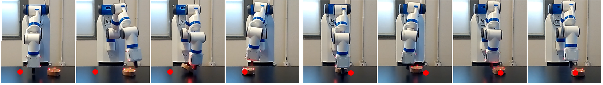

Xue Bin Peng(1,2)Marcin Andrychowicz(1)Wojciech Zaremba(1)Pieter Abbeel(1,2) (1)OpenAI(2)University of California, Berkeley

Abstract
Simulations are attractive environments for training
agents as they provide an abundant source of data and
alleviate certain safety concerns during the training process.
But the behaviours developed by agents in simulation are often
specific to the characteristics of the simulator. Due to modeling
error, strategies that are successful in simulation may not
transfer to their real world counterparts. In this paper, we
demonstrate a simple method to bridge this “reality gap.” By
randomizing the dynamics of the simulator during training, we
are able to develop policies that are capable of adapting to
very different dynamics, including ones that differ significantly
from the dynamics on which the policies were trained. This
adaptivity enables the policies to generalize to the dynamics of
the real world without any training on the physical system. Our
approach is demonstrated on an object pushing task using a
robotic arm. Despite being trained exclusively in simulation, our
policies are able to maintain a similar level of performance when
deployed on a real robot, reliably moving an object to a desired
location from random initial configurations. We explore the
impact of various design decisions and show that the resulting
policies are robust to significant calibration error.
@inproceedings{
Sim2Real2018,
author={X. B. Peng and M. Andrychowicz and W. Zaremba and P. Abbeel},
booktitle={2018 IEEE International Conference on Robotics and Automation (ICRA)},
title={Sim-to-Real Transfer of Robotic Control with Dynamics Randomization},
year={2018},
volume={},
number={},
pages={1-8},
keywords={Robots;Training;Adaptation models;Task analysis;Trajectory;Data models;Robustness},
doi={10.1109/ICRA.2018.8460528},
ISSN={2577-087X},
month={May}
}